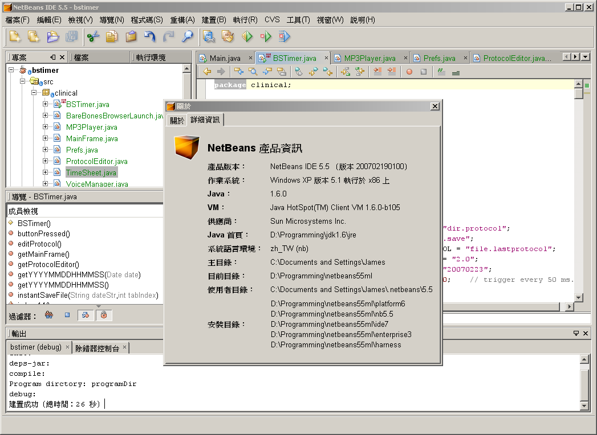

NetBeans 5.5 in Traditional Chinese: A Noteworthy Follow-up
Chin-Lung “James” Yu (余金龍) is no stranger to translation projects. At
the age of 15, he won a translation competition sponsored by Ladder
English, a famous English language learning magazine in Taiwan. The
task? To translate a select passage from English to Chinese. For his
first-place win, he received a book: “Stuart Little” by E.B. White.
Skip
ahead 20 years after that win and Yu finds himself back in the
spotlight for a translation effort of a different magnitude, that of
single-handedly localizing the NetBeans 5.5 IDE into Traditional
Chinese (zh_TW), a version that was successfully released February 26.
But instead of a hard-cover reward, he has the satisfaction of knowing
that Taiwanese developers can begin to work with the
NetBeans IDE in their own language.
The localization of the NetBeans IDE into Traditional Chinese is the
latest successful community-driven contribution from the NetBeans Translation
Project, which offers guidance and support for users interested in
creating local language versions of the NetBeans IDE and Platform, and
NetBeans.org web pages. In December 2006, the Brazilian
Portuguese
version of NetBeans 5.5 was released by a team of Brazilian developers
working under the auspices of the Translation Project. Coincidentally,
coming across the announcement of the Brazilian Portuguese release of
NetBeans 5.5 spurred Yu, a PhD candidate in molecular and medical
pharmacology, to consider translating the IDE into Traditional Chinese.
“I heard that the new NetBeans 5.5 had been much improved in features
and performance than earlier versions that I had tried before, so I
started to try it out and saw how I could switch from Eclipse,” said Yu
who uses Java to develop tools that process and analyze molecular
images for his research.
“Then one day in December, when I started up the IDE to practice I saw
an announcement in the welcome screen that NetBeans 5.5 had been
translated into Japanese, Simplified Chinese, and Brazilian Portuguese.
This announcement immediately made me think about translating 5.5 into
Traditional Chinese, so I signed up with the translation team and
volunteered to take on the Traditional Chinese localization project.”
With little experience translating software products or participating
in an open-source community effort, and still a novice with the
NetBeans IDE, Yu began translating with the guidance of members of the
Translation Project. In three short weeks, he had completely translated
the IDE.

(Click on image for larger view)
Three additional contributors: Koji Lin (林康司), Mike Lin (林上傑) and David
Lin (林子鐸)—(no relation between the three)—responded to a recruitment
thread on JavaWorld@TW,
a popular developer site in Taiwan, and signed
up to review, update and test Yu’s work. In joining the project, the
three developers wrote that they recognized a need for turning the
NetBeans 5.5 IDE into a Chinese-based IDE for Taiwanese developers who
would otherwise ignore the IDE in its English form.
Mike Lin, a training consultant with Sun Taiwan and who teaches
developers
in Traditional Chinese about Java technology and recently about
NetBeans 5.5, thought it was logical that his students have access to a
localized version of the IDE. David Lin, a graduate student in computer
science and a NetBean user for four years, enjoyed working with the new
features of 5.5 and wanted to make the IDE popular among other
Taiwanese developers. Likewise, Koji Lin, who uses NetBeans in his job
as a Java web developer, was attracted to Matisse and the IDE’s
convenient web application development environment, and thought others
like him ought to know about NetBeans.
Although the NetBeans 5.5 IDE is available in Simplified Chinese, a
Traditional Chinese version was needed to accommodate variations in the
Chinese language. Derived from Traditional Chinese, characters in
Simplified Chinese contain fewer strokes and thus are easier to
learn. The form, which was created over 50 years ago to promote
literacy, is used primarily in Mainland China, Singapore, and Malaysia,
while Traditional Chinese is dominant in Taiwan, Hong Kong, Macao, and
the majority of Chinese communities abroad. According to Yu, having the
IDE already translated into Simplified Chinese was an advantage.
Because of the shared root of the two forms he translated from
Simplified Chinese to Traditional Chinese, a quicker
process than from English. Translating certain Java terminologies that
some developers
prefer to use in English was an occasional challenge.
While Taiwanese developers can now experience the bliss of working in
the NetBeans 5.5 IDE in Traditional Chinese, German-speaking developers
won't be far behind, thanks to another translation project
that is nearing completion. Ruth Kusterer, a NetBeans
technical writer, Christoph Strobel, Holger Stenzhorn and Peter Heusch,
are localizing NetBeans
5.5 into German.
The Brazilian developers may have seemed a tough act to follow,
but their work has inspired users like James Yu and other language
communities to initiate
and complete noteworthy localizations of their own.
{kind=link}